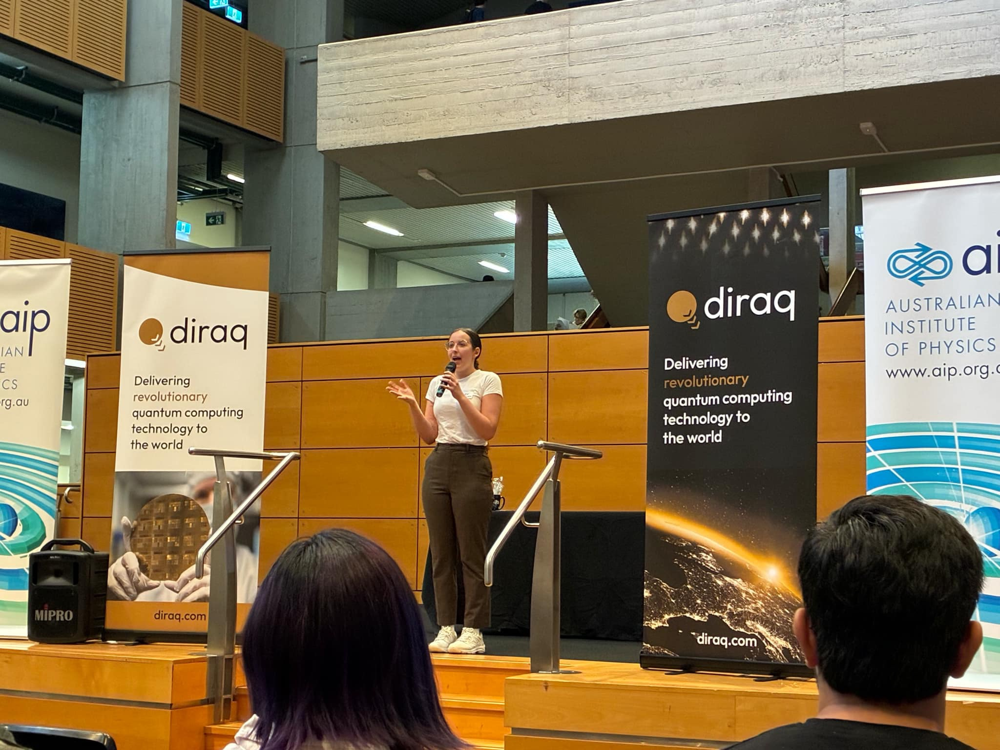
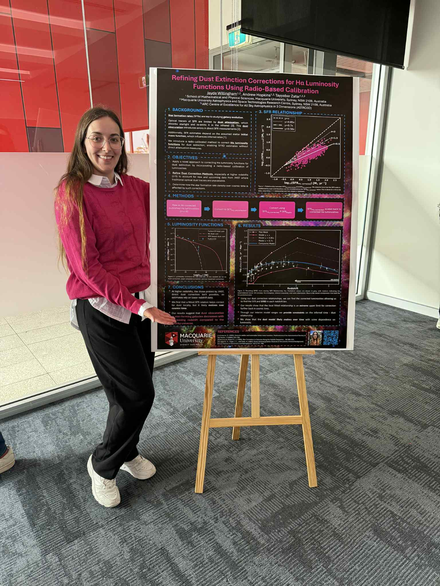
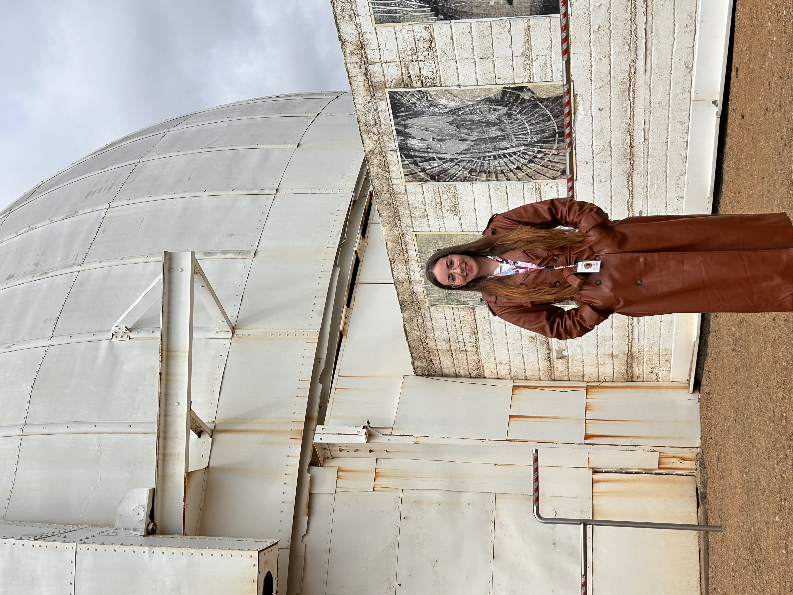
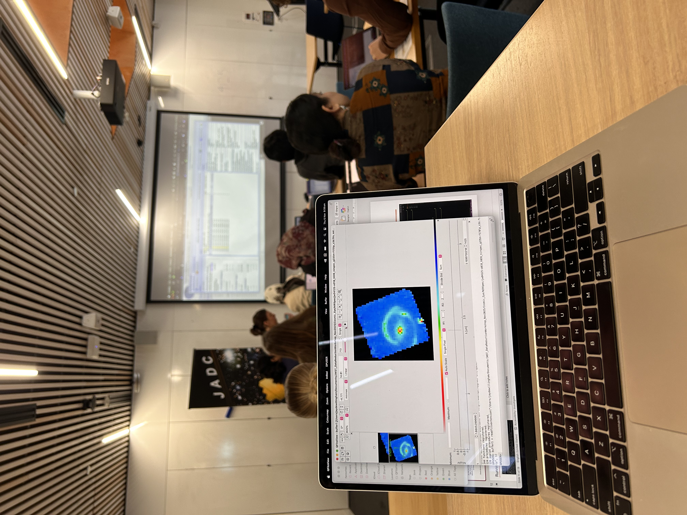

A year of galaxies, dust corrections, plotting scripts, and mild academic chaos.
You’re either here because you want to know more about the work I did during my Master of Research in Physics and Astronomy or because you’re curious what doing a research degree actually looks like behind the scenes.
Either way — welcome.
This post is less of a technical science deep dive and more of a walkthrough of what the process genuinely felt like. Research can seem incredibly mysterious from the outside, so I wanted to write something a little more honest about the exciting parts, the tedious parts, and the parts where your entire method explodes three days before a deadline.
I’ll also talk about some of the adjacent opportunities I got involved in throughout the year — conferences, workshops, poster events and generally trying to say “yes” to opportunities before my social battery completely vanished.
I also somehow managed to publish a paper during my Masters year. This is definitely not guaranteed during an MRes and required planning for publication almost from the beginning. Even then, the paper was still in revisions nearly six months after I submitted my thesis.
I completed my Masters at Macquarie University where I worked on improving how astronomers correct for dust attenuation in galaxies.
In simple terms: space contains dust that absorbs and scatters light. If we don’t correct for it properly, we can badly miscalculate things like how many stars galaxies are forming throughout cosmic history.
One question I get asked a lot is:
For me, it mostly came down to following the parts of coursework I genuinely found interesting. I loved galaxies, large scale evolution, and the idea that the Universe behaves differently at different epochs in cosmic history.
I liked the BIG questions:
Once I realised those were the things I kept gravitating toward, I looked for supervisors working in those areas and reached out.
Which, for anyone wondering, usually means:
A huge part of my project involved observational astronomy and data analysis, meaning I needed access to both radio and optical survey data.
My supervisor helped me get started with access to the survey databases, but after that I was mostly left to roam freely through gigantic astronomical catalogues downloading absurdly large datasets.
The key challenge was that I needed galaxies that appeared in BOTH surveys.
So I had to:
Once I had the matched sample, I applied a series of quality cuts to make sure we were actually measuring star formation and not unrelated processes.
From there, I could calculate star formation rates independently from both datasets and compare them directly. That comparison became the foundation for the dust correction relationship I eventually developed.
Once I had a dust correction relation, I wanted to apply it to Hα luminosity functions.
This became the single most time-consuming part of the thesis.
There is unfortunately no magical spreadsheet online containing every Hα luminosity function ever measured in a consistent format ready for use.
So instead I spent weeks digging through papers.
I eventually collected:
The challenge wasn’t just collecting the data — it was making sure everything used consistent assumptions, units and calibrations.
After standardising everything, I then had to apply my corrections and refit the luminosity functions using statistical fitting techniques and model optimisation.
This mostly involved:
Once all the corrected luminosity functions were finished, I could integrate under them to estimate the cosmic star formation rate density — essentially a measure of how rapidly the Universe forms stars over time.
And then something slightly terrifying happened...
The initial correction method dramatically overestimated star formation at high redshift.
So instead of pretending that was fine, we pivoted and asked:
Which resulted in redesigning the method and repeating the analysis multiple more times with different correction models.
Research is glamorous.
So there you have it — a very condensed overview of my Masters thesis year.
I really tried to take advantage of every opportunity that came my way, whether that was conferences, workshops, poster presentations or collaborative events.
I’m hoping this post maybe helps demystify what a research Masters actually looks like for students considering one themselves.
Or at minimum proves that astrophysics mostly consists of:
One of the coolest opportunities I got during my Masters was participating in the Australian Institute of Physics poster event.
It involved presenting my research alongside Masters and PhD students from across the greater Sydney area.
It was honestly super nerve-wracking at first but ended up being an amazing learning experience.

The AIP event also helped prepare me for the official MRes poster presentation within the faculty itself.
After doing multiple poster sessions in a row I became way more confident explaining my work in that format.

I used part of my student research funding to attend the Mount Stromlo Student Symposium.
It involved student talks, networking, workshops and career development sessions.
The only questionable choice was attending roughly two days before my thesis submission deadline.

I also travelled to Melbourne for the James Webb Australian Data Centre Workshop.
We got hands-on experience working directly with JWST data and reduction pipelines, which was incredibly exciting.
It also gave me a chance to visit potential PhD institutions in person, which I highly recommend doing.
